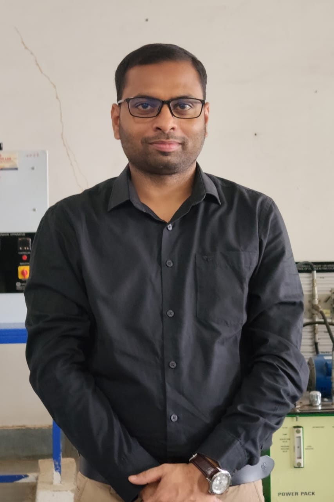

About Electrical Engineering

Rohit Kumar
H.O.D. Electrical Engineering Department
This is a new branch which provides integration of Electrical and Electronics Engineering. The major thrust in this course is related to the basic principles and detailed analysis of equipments and systems for generation, transmission, distribution and utilization of electrical energy. The department is committed to engage in high quality research and pursuit of excellence in teaching. The faculty members of the department are actively involved in research and development in challenging areas of both theory and experiment. The labs established here have been well equipped with the latest equipment. Instructional laboratories for Basic Electronics, Analog Electronics and Digital Electronics are fully operational.